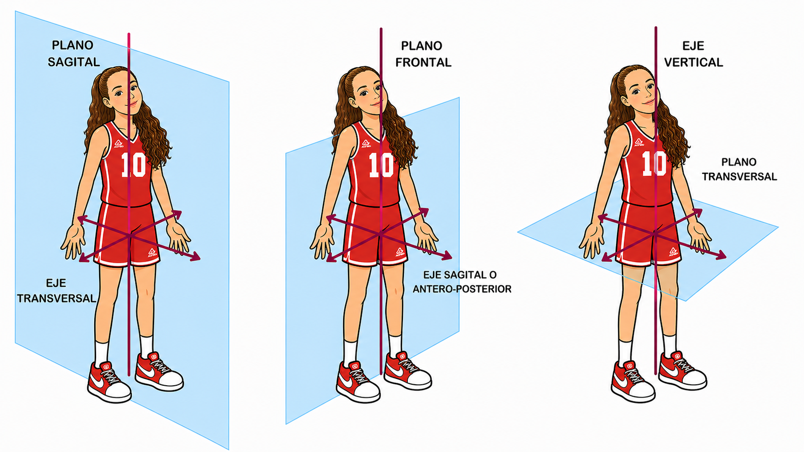
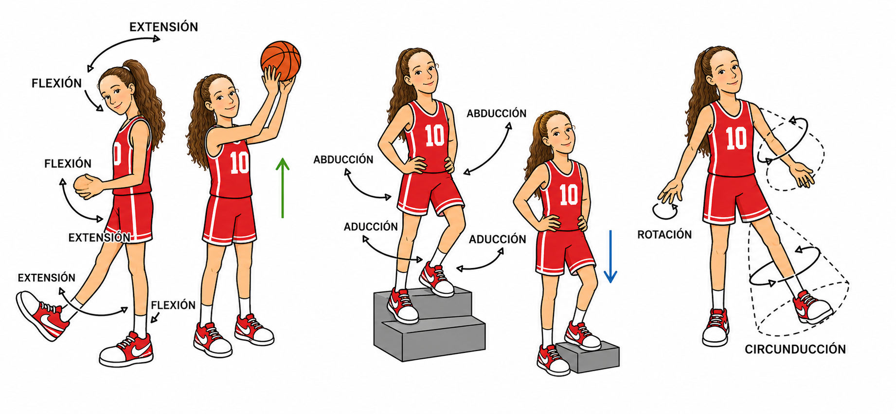
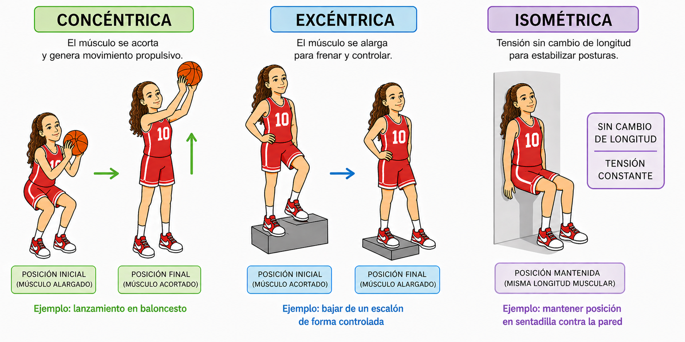
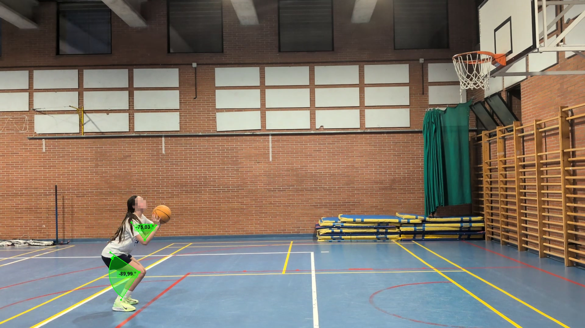
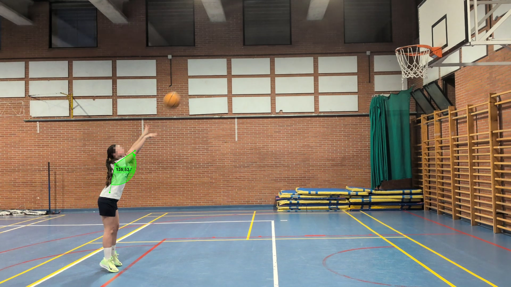
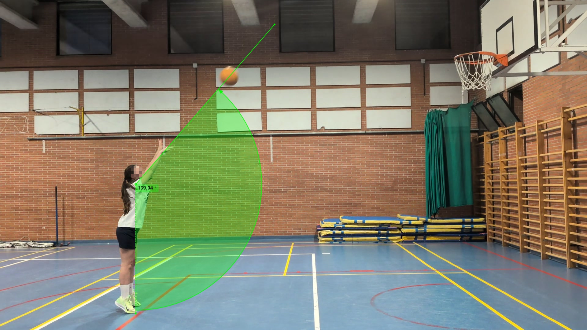
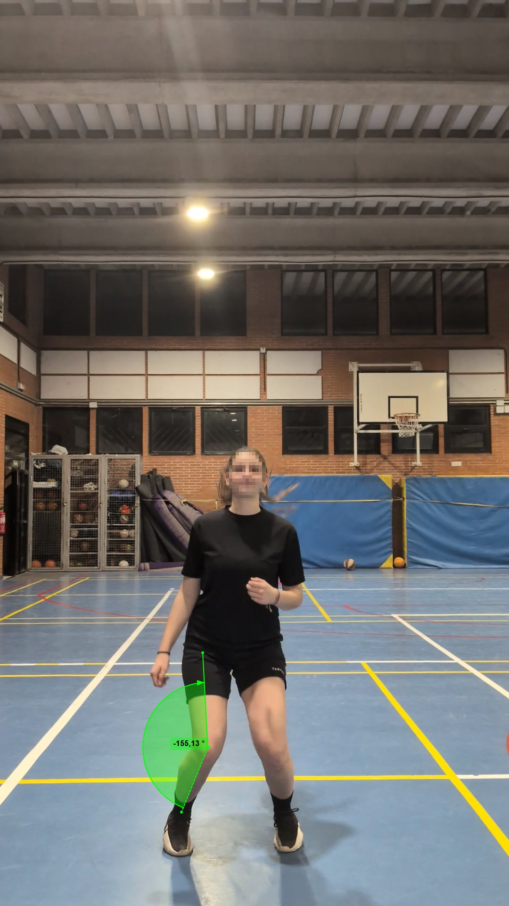
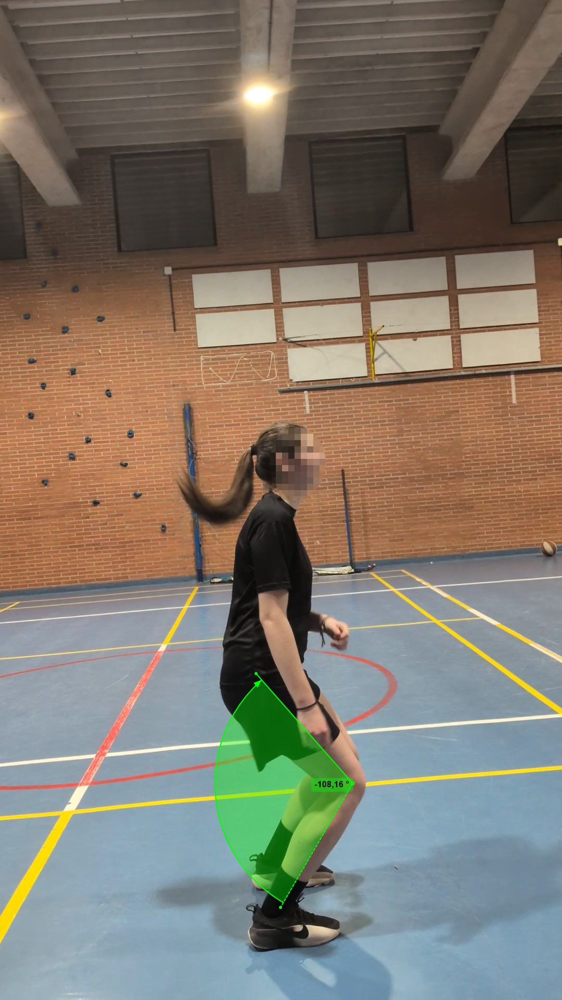
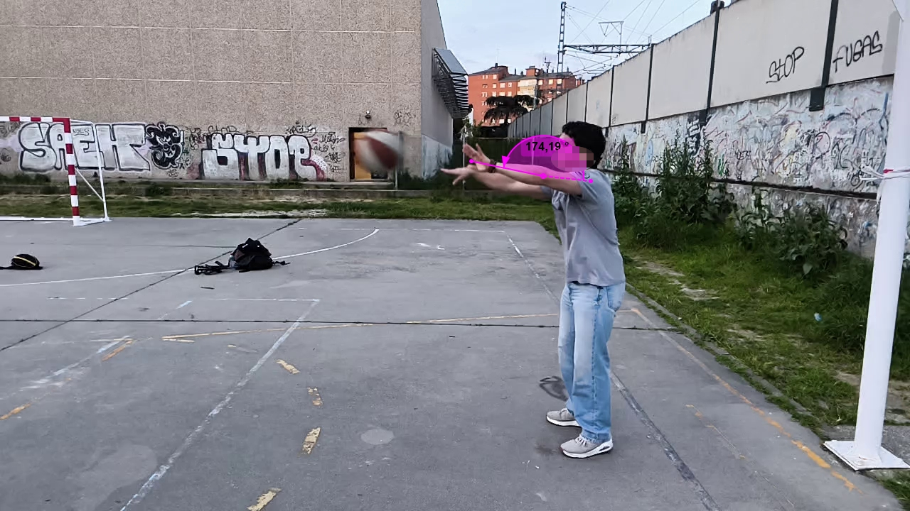
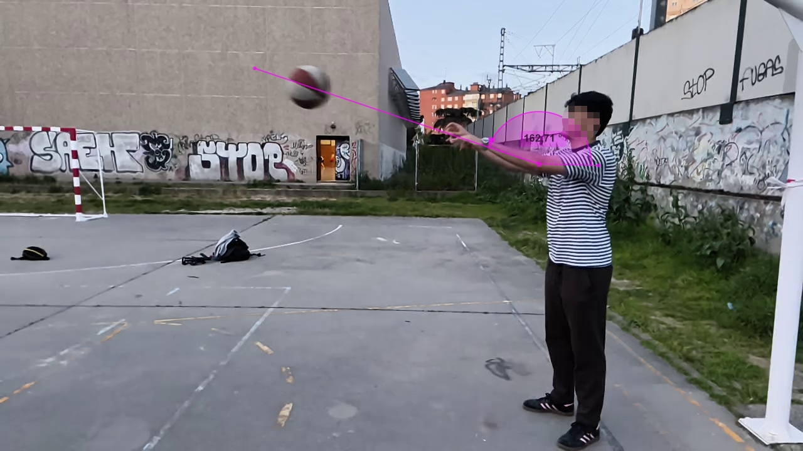

Análisis cuantitativo de gestos técnicos mediante vídeo para mejorar la técnica y prevenir lesiones.
Esta página web recoge los resultados de mi proyecto de investigación personal de primero de bachillerato. El tema que elegí es la biomecánica del baloncesto, un deporte que practico y que me generó la curiosidad de saber si podía analizarlo de forma científica.
La idea principal es estudiar algunos gestos técnicos del baloncesto midiendo variables como los ángulos articulares y comparando los datos obtenidos con referencias bibliográficas para detectar posibles errores técnicos o riesgos de lesión.
Para ello, diseñé y realicé un experimento con jugadores reales cuyos resultados y conclusiones se muestran en esta página.
Analizar de forma cuantitativa y cualitativa los movimientos en gestos específicos del baloncesto para identificar errores técnicos, valorar el riesgo de lesión y proponer recomendaciones de mejora.
Conceptos clave de física y anatomía aplicados al análisis del movimiento deportivo.
El cuerpo humano se analiza en tres planos (sagital, frontal y transversal) y tres ejes perpendiculares entre sí (X, Y, Z). Todo movimiento articular ocurre como una rotación alrededor de un eje perpendicular al plano de movimiento correspondiente.

Figura 1 · Planos y ejes de movimiento del cuerpo humano
Los movimientos articulares reciben nombres específicos según el eje alrededor del cual giran y el plano en que se producen. Conocer esta clasificación es fundamental para identificar y describir con precisión cualquier gesto deportivo.
| Eje de rotación | Plano de movimiento | Tipos de movimiento |
|---|---|---|
| Eje transversal | Plano sagital | Flexión y extensión |
| Eje anteroposterior | Plano coronal (frontal) | Abducción y aducción |
| Eje longitudinal | Plano transversal | Rotación medial y rotación lateral |

Figura 2 · Clasificación de los movimientos articulares según eje y plano
Los músculos pueden contraerse de tres formas distintas según la relación entre la tensión generada y el cambio de longitud del músculo. En el baloncesto, los tres tipos se combinan constantemente a lo largo de cada gesto técnico.

Figura 3 · Tipos de contracción muscular
Las articulaciones actúan como ejes de rotación. El torque (T = F × brazo de momento) es la fuerza de giro muscular. La alineación corporal determina la dirección del vector fuerza y la precisión del gesto.
Punto hipotético donde se concentra toda la masa corporal. Para el equilibrio, la línea de gravedad debe caer dentro de la base de apoyo. La estabilidad aumenta con el centro de gravedad más bajo.
Un balón en rotación genera diferencias de presión aerodinámica que desvían su trayectoria. El backspin (giro hacia atrás) produce sustentación, estabiliza el vuelo y mejora el rebote al tocar el aro.
La energía en el tiro libre se transfiere en secuencia proximal-distal: de los pies al tronco y hasta la muñeca. Por eso es crucial implicar todo el cuerpo en el lanzamiento, no solo el brazo.
Medición de ángulos articulares en fotogramas clave con Kinovea y comparación con valores de referencia de la literatura científica.
8 jugadores sin lesiones activas. Muestra exploratoria con fines didácticos — los resultados no son generalizables.
Los jugadores presentarán valores cercanos a los de referencia, con variaciones individuales.
Las desviaciones de los rangos óptimos corresponderán a errores técnicos identificables.
Las jugadoras muestran valores de valgo de rodilla mayores que los hombres, por lo que tienen mayor riesgo de lesión de LCA.
Media de las tres repeticiones por jugador. Las líneas punteadas indican los valores de referencia de la bibliografía.

Fotograma extraído del vídeo en el momento de máxima flexión de rodilla antes del despegue. El ángulo medido con la herramienta de tres puntos de Kinovea corresponde a la articulación de la rodilla del lado dominante.
La media del grupo (109°) coincide casi exactamente con la de tiradores expertos. Sin embargo, los hombres flexionan bastante más (135°) que las mujeres (93°). Juan destaca con 156°, muy por encima del resto. Sara presenta la menor flexión (82°).
El mismo fotograma de la fase de preparación permite medir el ángulo de codo del brazo de lanzamiento. La referencia bibliográfica distingue entre tiradores expertos (71,9°) y no expertos (80,5°).
Los hombres tienen una media de 108º muy alejados de la referencia porque tienden a colocar el balón muy bajo en el inicio del tiro, mientras que en las mujeres es de 77º. Lara (70°) es la mujer más cercana al nivel experto.

Fotograma del instante exacto en que el balón deja la mano. Se mide el ángulo de elevación del hombro del brazo dominante. La referencia para tiradores expertos sitúa este ángulo en 123,4° (±14°).
El ángulo de hombro en la liberación es la variable más homogénea del grupo con diferencias entre hombres y mujeres pequeñas, dentro de la desviación típica del estudio de referencia (±14–15°).

Fotograma en el que se traza la trayectoria inicial del balón justo tras la liberación. El ángulo se mide respecto a la horizontal mediante la herramienta de ángulo de Kinovea.
La bibliografía consultada no proporciona un valor de referencia específico para esta variable en este contexto. La variabilidad entre participantes es baja, lo que indica homogeneidad en el ángulo de salida. Los ángulos registrados (135°–148°) corresponden a lanzamientos con trayectorias parabólicas suficientes para el aro.

Vista frontal del instante de contacto con el suelo. Permite medir el ángulo de abducción de rodilla (valgo dinámico). Según Chen et al. (2022) cuanto menor sea el ánngulo (alejándonos de la alineación completa de la pierna a 180º) mayor riesgo de rotura de LCA.
⚠️ Menor ángulo frontal = mayor desviación respecto a la alineación de rodilla = mayor valgo dinámico. La media del grupo fue de 168°, con mayor valgo en mujeres (164°) que en hombres (176°). Las mujeres muestran 12° más de abducción que los hombres. Lara (154°) y Carmen (155°) presentan el mayor valgo del grupo.

Vista lateral en el momento de máxima excursión de rodilla tras el aterrizaje. Se mide el ángulo cadera–rodilla–tobillo: un ángulo menor indica mayor flexión y mejor amortiguación; un ángulo mayor (rodilla menos flexionada) implica mayor carga sobre el LCA.
Las mujeres muestran 10° más de flexión al aterrizar que los hombres (media 104° vs 114°): al medir el ángulo cadera–rodilla–tobillo, un valor menor equivale a mayor flexión y mejor amortiguación, resultado favorable en esta variable. Sara (122,7°) es la jugadora con menor flexión relativa del grupo y la única en riesgo moderado por esta variable. Angela (95°) y Lara (91°) presentan la mayor flexión, lo que actúa como factor protector que compensa parcialmente su riesgo por valgo frontal.
Solo jugadoras (el riesgo de LCA es significativamente mayor en mujeres según la bibliografía).
■ Abducción frontal: ≥ 170° bajo · 160–169° moderado · < 160° alto |
■ Flexión máxima (ángulo suplementario): ≤ 120° bajo · 121–130° moderado · > 130° alto

Fotograma en el momento de liberación del balón. Se mide el ángulo de extensión del codo de ambos brazos. El valor ideal de referencia es 180° (extensión completa). Según Izzo & Russo (2011), una mayor extensión mejora la velocidad de salida del balón.
Ningún jugador alcanza la extensión completa de 180°. Las mujeres (166°) se acercan más al ideal que los hombres (156°). Una posible explicación es que en la sesión de los hombres el receptor estaba demasiado cerca, lo que no exigía extender los brazos completamente. Sara (174°) y Lara (172°) son las más próximas al ideal.

Fotograma con la trayectoria del balón trazada sobre el vídeo. El ángulo se mide respecto a la horizontal: 180° equivale a un pase perfectamente recto. La referencia ideal para un pase de pecho eficaz es lo más próximo a 180°.
La trayectoria del balón es el aspecto técnico más homogéneo del grupo: hombres y mujeres muestran valores prácticamente idénticos. La desviación media de ~14° respecto al ideal horizontal es consistente en todos los participantes. Romeo (171°) y Sara (172°) son los más próximos a la trayectoria ideal.
Los resultados muestran diferencias claras entre hombres y mujeres, siendo el salto vertical el gesto con mayor implicación para la prevención de lesiones.
La media del grupo en la flexión de rodilla y el ángulo de hombro coincide con tiradores expertos. La mayor diferencia entre sexos aparece en el codo: las mujeres alcanzan valores próximos al nivel experto (media 77°, referencia 71,9°), mientras que los hombres quedan muy por encima incluso del umbral no experto (media 108°), tendiendo a colocar el balón demasiado bajo en la fase de preparación.
Las mujeres presentan 12° más de abducción de rodilla al aterrizar y 10° más de flexión que los hombres (ángulo menor = mayor amortiguación): en la variable de flexión, la respuesta femenina es favorable. El factor de riesgo dominante es el valgo dinámico frontal, que sitúa a dos jugadoras en riesgo alto y a otras dos en riesgo moderado. Solo una jugadora alcanza riesgo moderado por flexión, siendo el valgo el factor determinante del riesgo de LCA en el grupo, coherente con la mayor prevalencia de esta lesión en el deporte femenino.
Es el gesto donde el grupo más se aleja del valor de referencia: ningún jugador alcanza la extensión de codo de 180°. Las mujeres se acercan más que los hombres, aunque factores de la grabación (distancia al receptor) pueden haber influido en los resultados masculinos.
Con solo 8 participantes, los resultados no son generalizables. Sin embargo, el estudio cumple su objetivo: aplicar la biomecánica a casos reales y observar tendencias de grupo coherentes con la bibliografía científica. El análisis por vídeo con Kinovea se muestra como una herramienta accesible y eficaz.